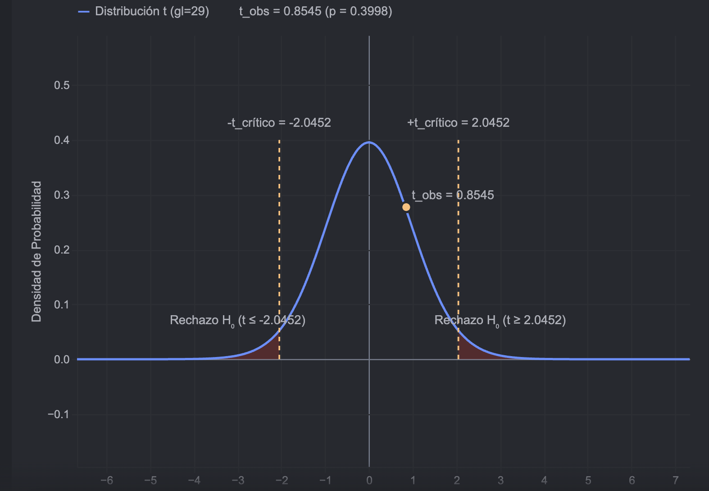

prueba estadística de la media poblacional
Para realizar una prueba estadística de la media poblacional (μ) en Python, la opción estándar cuando no conoces la desviación estándar poblacional (σ) es la prueba t de una muestra con scipy.stats.ttest_1samp.
Prueba t con datos en bruto
Usa ttest_1samp cuando tienes el arreglo o lista de observaciones de tu muestra y quieres contrastarla contra un valor hipotético μ₀:
import numpy as np
from scipy import stats
muestra = np.array([65, 58, 70, 52, 61, 68, 55, 63, 59, 67])
mu_0 = 60 # Media poblacional hipotética
# Prueba bilateral: H0: mu = 60 vs H1: mu != 60
resultado = stats.ttest_1samp(muestra, popmean=mu_0)
print(f"Estadístico t: {resultado.statistic:.4f}")
print(f"Valor p: {resultado.pvalue:.4f}")
print(f"Grados de libertad: {resultado.df}")
Decisión (α = 0.05): Si pvalue < 0.05, rechazas H₀. Si pvalue >= 0.05, no hay evidencia suficiente para rechazar H₀.
Pruebas unilaterales: Pasa alternative=’greater’ (H₁: μ > μ₀) o alternative=’less’ (H₁: μ < μ₀).
Prueba t a partir de estadísticos resumidos
Si ya conoces la media muestral (x̄), la desviación estándar muestral (s) y el tamaño de muestra (n), calcula el estadístico y el valor p directamente:
Con los valores del ejemplo (n = 30, x̄ = 62.1, s = 13.46, μ₀ = 60), se obtiene t = 0.8545, p = 0.3998 y valores críticos de ± 2.0452 para α = 0.05. Como p > 0.05 y (vert{}tvert{} < 2.0452), no se rechaza H₀.
Distribución t de Student (gl = 29) con Regiones de Rechazo y Estadístico t

Cuándo usar prueba Z o no paramétrica
Prueba Z (varianza poblacional σ² conocida): Usa scipy.stats.norm.cdf o norm.sf con error estándar (sigma / sqrt{n}).
Datos no normales o muestras pequeñas sin normalidad: Usa la prueba de los rangos con signo de Wilcoxon con scipy.stats.wilcoxon(muestra - mu_0).